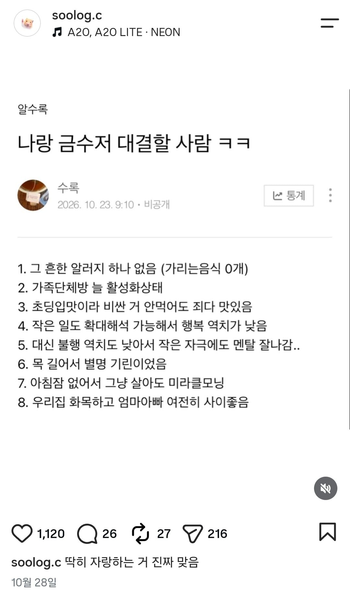

금수저 자랑
댓글
개씹 근수저
1번에서 이미 져버렸다
뭘먹어도 소화잘함
항상 쾌변함 변비없음
1년에 배앓이 5회미만
누렁이 입맛
느끼한 음식의 역치가 극도로 높음
생레몬 잘먹음
며칠 폭식해도 살 잘 안찜

소화 잘하는거랑
살안찌는게
양립할수잇나?
ㅇㅇ 가능함
4가 좋긴하지 ㅋㅋ
1번 중요하더라 삶의질 급하락
나도 항히스타민제가 상비약으로 쌓아두고 먹고 사는데 여기 어느개붕이가 알려 준 알래그라 좋더라 지르텍먹으면 기절하는 수준의 잠오는게 없어져서 한결 하루를 충실히 보냄
머리숱많음
닉값ㄷㄷ
화목한 가정 보면 어떻게 저럴 수 있을까 싶으면서도 살짝 부러움
아침에 일어나도 1분안에 평소 텐션 돌아옴 나랑 나이 비슷한 애들은 5분이상 비몽 사몽있던데
가정이 화목한건 정말 중요한거야